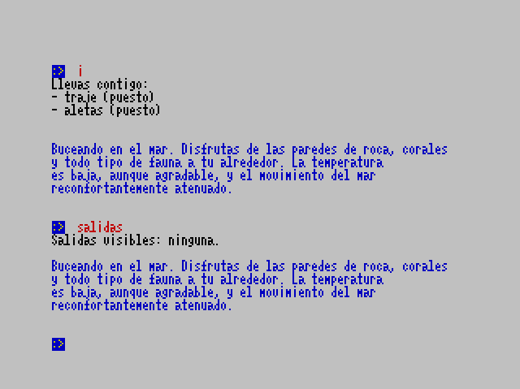

Bares
Buceas en la Estaca de Bares, un fantástico paraíso de coral ante ti. Por encima de tu cabeza, se encuentra la antigua base estadounidense LORAM, de la que se dijo que siempre había tenido una base de submarinos en su interior...
Implementación
Bares es un juego minimalista, pero con la esperanza de ser suficientemente rico en respuestas, para el Sinclair Spectrum.
Ha sido creado con z88dk, un compilador (y toolchain completa) de C para máquinas de 8 bits.
Descárgalo aquí.